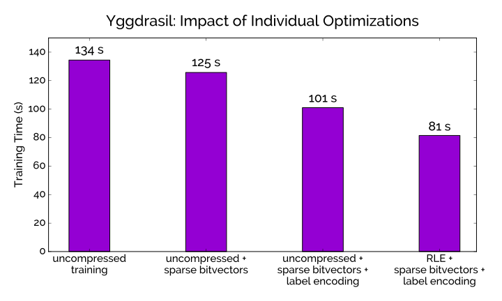

Yggdrasil: An Optimized System for Training Deep Decision Trees at Scale
| Firas Abuzaid | Joseph Bradley |
| Feynman Liang | Andrew Feng |
| Lee Yang | Matei Zaharia |
| Ameet Talwalkar | |

Motivation
- Decision trees work well for lots of ML problems
- Easy to debug; easy to tune, easy to understand
- As data grows in size $(n)$ and dimensionality $(p)$, two issues arise:
- Training sets can’t fit on a single machine—more nodes required for training
- Deeper trees (e.g., $D \geq$ 10) are needed; greater depth $\rightarrow$ higher model accuracy
How do we train deep distributed decision trees?
Planet: The Classic Approach
- Partition training set by training instance (i.e., by row)
- Each worker computes sufficient statistics on subset of training data
- Since data partitioned by row, workers must compute statistics for all features

The Problem with Planet
- Communication cost between nodes scales poorly as $p$ and $D$ increase
- To limit communication, workers only consider $B$ thresholds, number of histogram buckets
- Instead of $n-1$, like in the single-node algorithm
- Optimal split may not always be found!

Excerpt from page 5 of the Planet
paper
The Problem with Planet
Three problems:
- Another hyperparameter to tune: $B$
- Important tradeoff:
-
finding optimal split
↕
runtime efficiency - Large $p$ and $D$ $\rightarrow$ poor runtime (even if you choose optimal $B$!)
Big Idea: Partition by column
Yggdrasil: The New Approach
- Partition training set by feature
- Each worker computes sufficient statistics on all local features
- Send locally optimal feature to master; master picks globally optimal
- No $B$ parameter; no tradeoff for finding optimal split
- Equivalent to serial algorithm on a single node

Tale of the Tape: Planet vs. Yggdrasil


Tale of the Tape: Planet vs. Yggdrasil


Key takeaway:
Yggdrasil is more efficient than Planet for large $p$ and $D$
Big Idea: Partition by column*
*Ye et al., 2009; Svore and Burges, 2011; Caragea et al., 2004
In theory, theory and practice are the same.
In practice, they are not.
Yggdrasil in Action
- Partition features across workers
- Workers sort each feature by value
- Compute best split for each feature
- Pick best split for each worker, send split + bit vector to master
- Master selects best global split among the candidates
- Master sends bit vector for best global split to each worker
- Worker sorts each feature by bit vector (using label indices), then value
Why sort?
- Must keep track of the split history for each feature
- New column per split $\rightarrow$ exponential memory footprint
- With sorting, memory overhead is constant
How expensive is sorting?
Does Yggdrasil do an $O(n \log n)$ sort per iteration?
No!
- The first sort operation is $O(n \log n)$
- Sorting based on bit vector is $O(n)$, since the data is already sorted
Optimizations
- Sparse bitvectors
- Label encoding
- Columnar compression: Train on compressed features—without decompression!

Results: Real-world Datasets


Dataset Info:
| # instances | 8.1 $\times$ 106 |
| # features | 784 |
| Size | 18.2 GB |
| Task | classification |
Results: Real-world Datasets


Dataset Info:
| # instances | 2 $\times$ 106 |
| # features | 3500 |
| Size | 52.2 GB |
| Task | regression |
Results: Scalability

Results: Scalability


Key takeaway:
Empirical results match the expected tradeoffs
Future Work
Why should I have to choose?
- If Planet is better for shallow trees and few features...
- And Yggdrasil is better for deeper trees and many features...
- Why can't I have both?
You should!
Future Work
- Merge Yggdrasil into Spark MLlib 2.1
- Add decision rule that automatically chooses best algorithm for you a priori
- Single feature doesn't fit on a single node? Fix it!
Thanks!
Any questions? Shoot me an email:
fabuzaid at cs dot stanford dot edu
fabuzaid at cs dot stanford dot edu